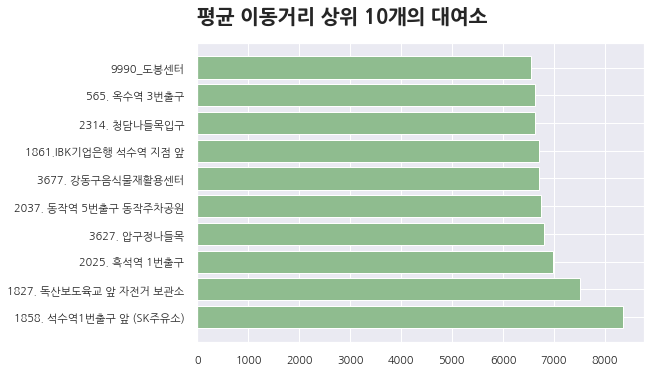

Seoul Bike - sub-analysis
region
sub-analysis
서울 각 구의 따릉이 상세정보를 볼 수 있습니다
SUB-ANALYSIS
rental location
utilization
correlation
rental location
평균 이동거리와 평균 이용시간에 따른
상위 10개의 대여소를 시각자료로
확인할 수 있습니다
이동거리
이용시간
